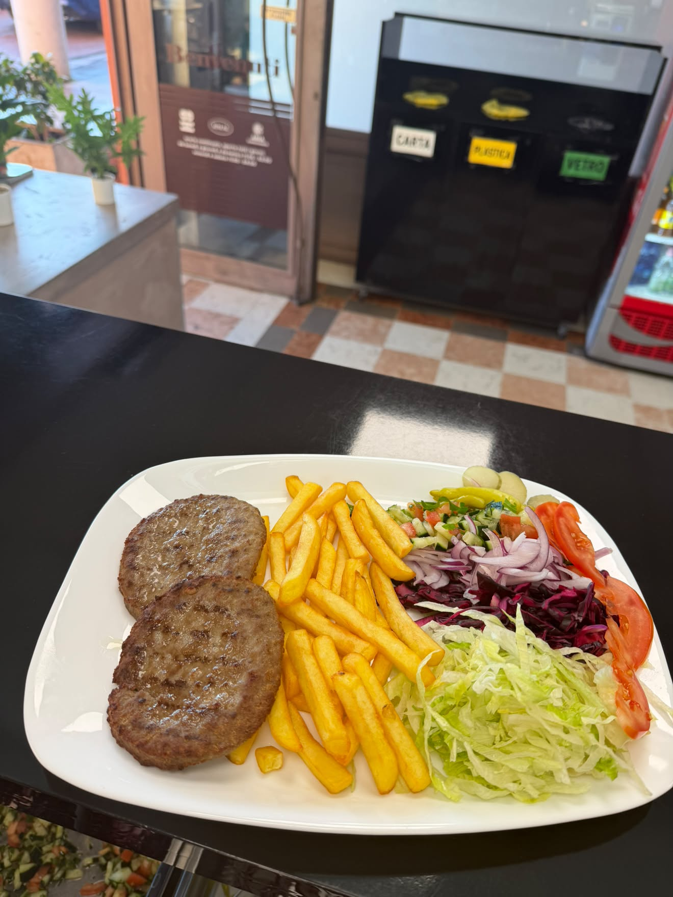
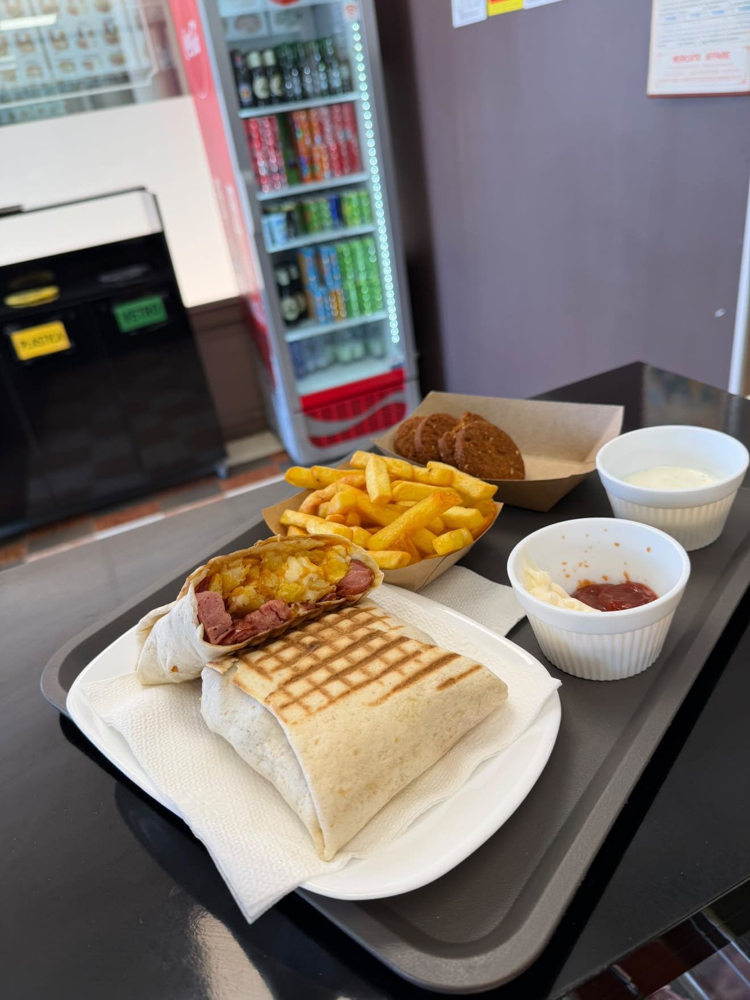
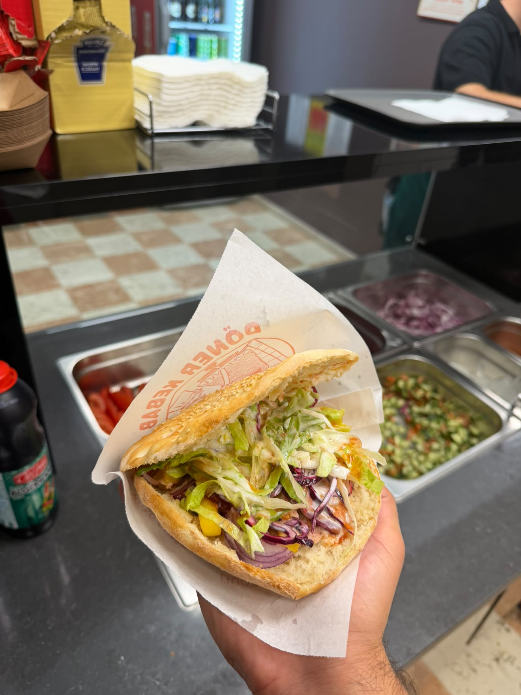
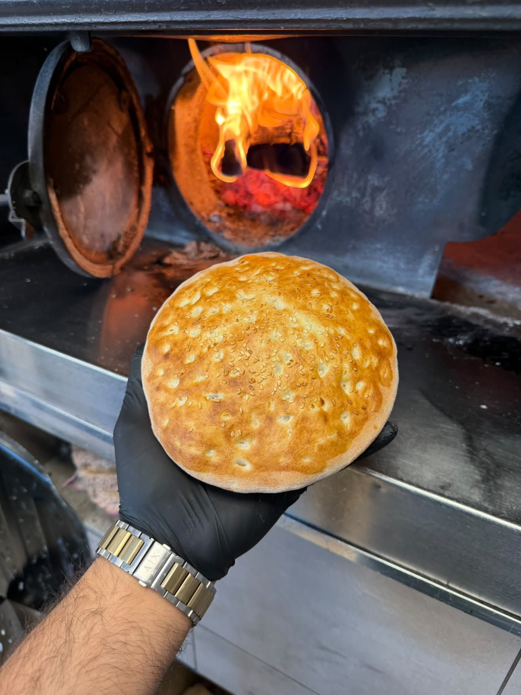
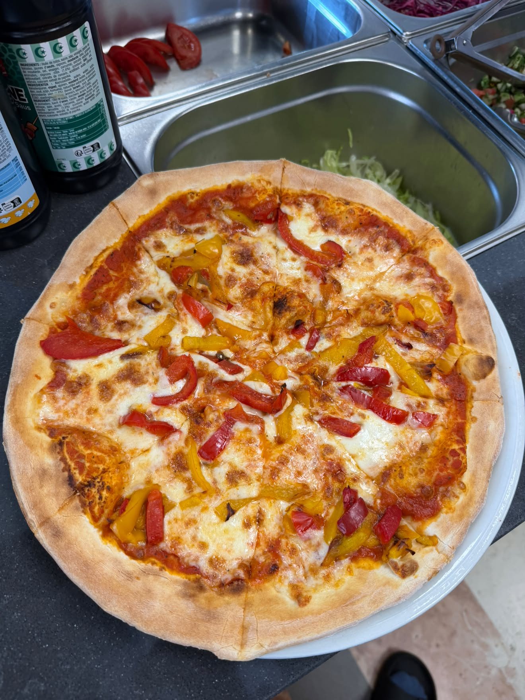
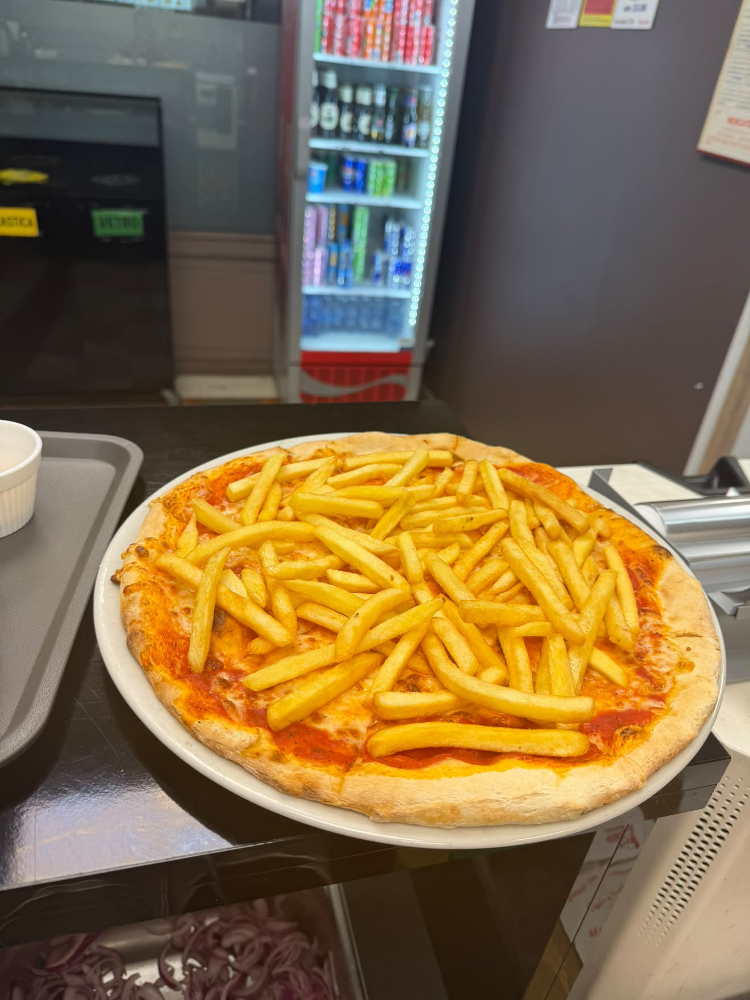
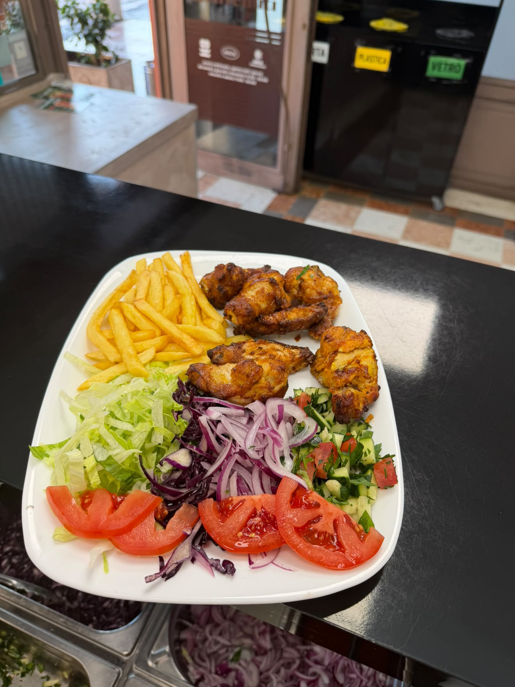
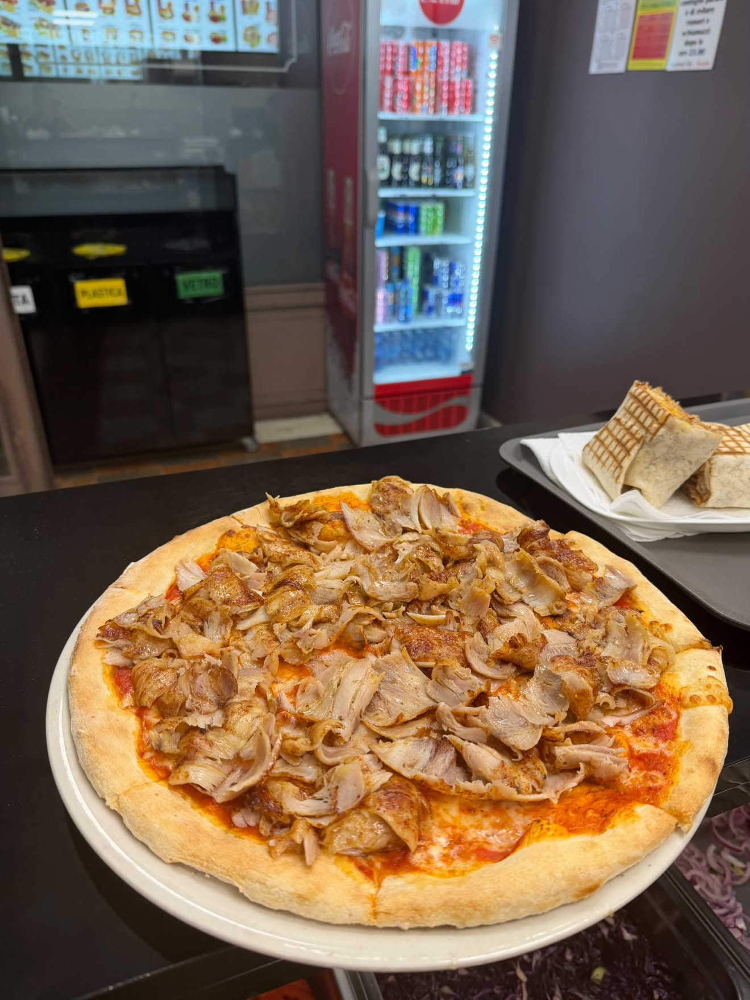
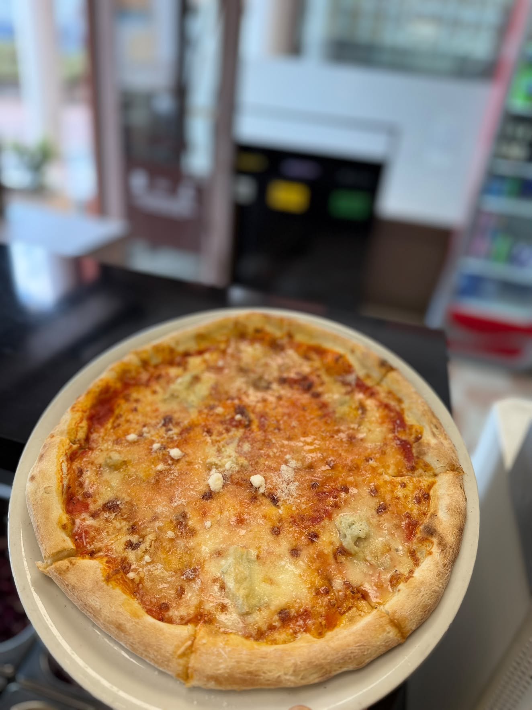
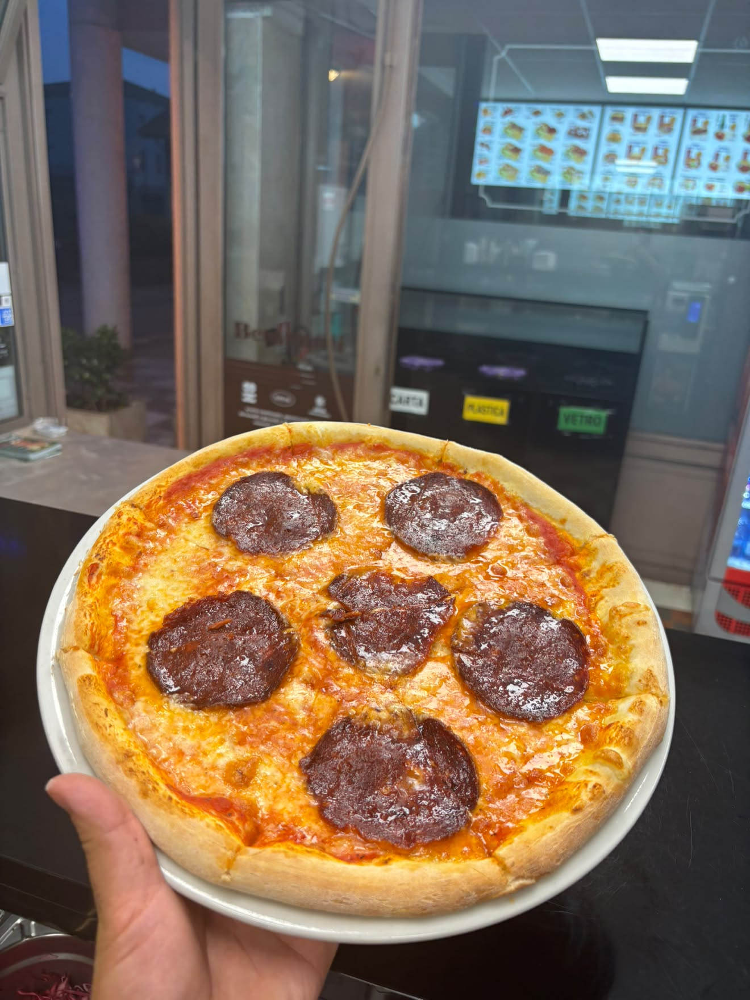

Pide Kıymalı
Tradizionale
Carne macinata speziata con pomodoro fresco, cipolla dolce e spezie anatoliche su morbida pasta dorata.
Ordina via WhatsAppPide Kaşarlı & Sucuk
Consigliata
Formaggio filante turco kaşar e salsiccia speziata sucuk tagliata a rondelle e gratinata al forno.
Ordina via WhatsAppPide Mista Istanbul
Speciale
Ricca farcitura con sfoglie di carne döner kebap, formaggio fuso, pomodoro e peperoni dolci.
Ordina via WhatsAppPide Vegetariana con Feta
Vegetariana
Formaggio bianco tipo feta, spinaci delicati, pomodorini e olio extravergine d'oliva.
Ordina via WhatsAppPanino Kebap Tradizionale
Il Classico
Pane turco caldo e fragrante, carne kebap abbondante, insalata fresca, pomodoro, cipolla e salse della casa.
Ordina via WhatsAppDürüm Piadina Kebap
Più Richiesto
Sfoglia arrotolata e tostata al momento con carne tenera, verdure fresche croccanti e salsa yogurt piccante o delicata.
Ordina via WhatsAppPiatto Kebap Completo
Porzione Ricca
Grande porzione di carne kebap servita con riso basmati aromatico, patatine dorate, insalata mista e focaccia calda.
Ordina via WhatsAppPiatto Kebap con Feta & Olive
Gourmet
Carne allo spiedo accompagnata da formaggio greco feta, olive nere, salsa tzatziki e pane artigianale tostato.
Ordina via WhatsAppKebap Box con Patatine
Veloce & Sfizioso
Pratica scatola termica con strati di patatine croccanti e carne döner tagliata fine, affogata nelle tue salse preferite.
Ordina via WhatsAppLahmacun Classico
Autentico
Sottilissima sfoglia croccante con trito di carne, pomodoro, prezzemolo e spezie; servito con limone fresco e insalata.
Ordina via WhatsAppLahmacun Kebap Arrotolato
Golosissimo
Base di lahmacun farcita all'interno con carne döner kebap tagliata fresca, verdure croccanti e salsa allo yogurt.
Ordina via WhatsAppFrench Tacos Singolo
Specialità Francese
Tortilla sigillata alla piastra con carne marinata, patatine fritte all'interno e la famosa salsa calda al formaggio.
Ordina via WhatsAppFrench Tacos Maxi Doppio
Super Ricco
Doppia porzione di carne a scelta, patatine dorate, doppia salsa ai formaggi e gratinatura esterna filante.
Ordina via WhatsAppPizza Istanbul City
La Nostra Firma
Pomodoro, mozzarella fiordilatte, carne kebap speziata abbondante, cipolla rossa e filo di salsa allo yogurt all'uscita.
Ordina via WhatsAppPizza con Sucuk Piccante
Piccante
Base rossa, mozzarella filante, salsiccia turca speziata sucuk all'aglio e paprika dolce, peperoncino e origano.
Ordina via WhatsAppCalzone Farcito Kebap
Al Forno
Calzone dorato e fragrante ripieno di mozzarella filante, carne kebap allo spiedo e funghi champignon trifolati.
Ordina via WhatsAppPizza 4 Formaggi & Kebap
Saporita
Mozzarella, gorgonzola dop, fontina e parmigiano con straccetti di döner kebap rosolato al momento.
Ordina via WhatsApp